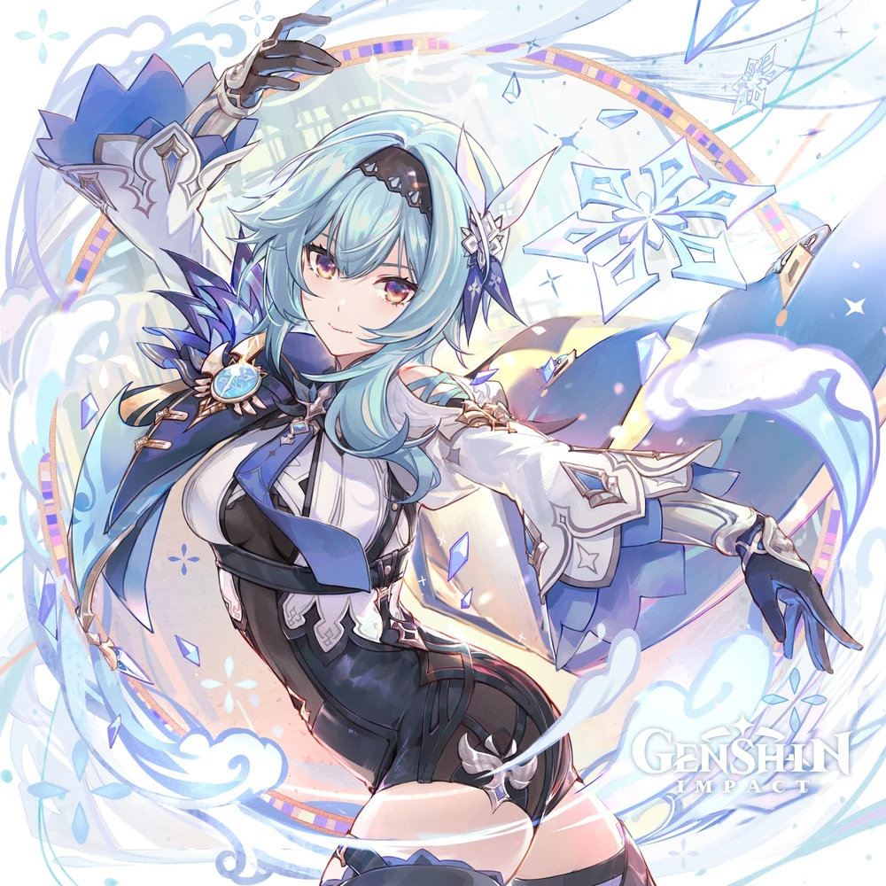

Эола
Эола — мятежный потомок аристократии, Рыцарь Морская пена, всегда на поле боя.
Родившись в старом аристократическом клане и неся в себе родословную преступников, человек нуждается в уникальном подходе к миру, чтобы спокойно ориентироваться среди предрассудков.
Конечно, это не помешало Эоле разорвать связь со своим кланом.
Выдающийся Рыцарь Морская пена, она охотится на врагов Мондштадта в дикой природе, чтобы воплотить свою уникальную «месть».